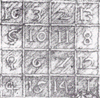
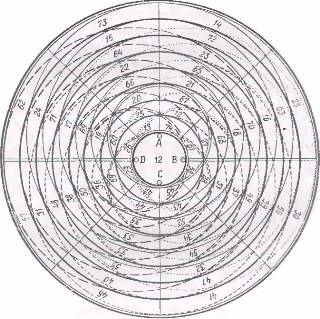

Магические квадраты
-
Альбрехт Дюрер хотел поместить год написания гравюры 1514 в нижнюю строчку
изображенного на ней магического квадрата. Мог ли Дюрер использовать вместо своего
квадрата какие-либо другие квадраты, в которых тот же год фигурировал таким же образом?

-
Дюрер прожил до 1528 года. Смог ли он датировать какую-нибудь из своих более
поздних картин таким же образом?
-
Изучите некоторые свойства магического круга Бенджамина Франклина.

Пифагоровы треугольники
-
Найдите какое-нибудь решение уравнения Пифагора x2
+ y2 = z2 в целых числах.
-
Попытайтесь найти решения уравнения Пифагора, в котором гипотенуза на единицу
больше, чем больший из двух катетов.
-
Найдите все пифагоровы треугольники, у которых длина гипотенузы не превосходит
100.
-
Найдите все такие треугольники Пифагора, у которых длина одной из сторон
равна а) 50, б) 22.
-
Могут ли быть треугольниками Пифагора треугольники с площадями а) 78,
б) 120, в) 1000?
-
Найдите все треугольники Пифагора с периметрами а) 88, б) 110.
-
Треугольник Герона — это треугольник с целочисленными сторонами, площадь
которого выражается целым числом. Найдите треугольник Герона, не являющийся прямоугольным.
-
Найдите 8 натуральных чисел a1, a2, …, a8
таких, что √(√a1 - √(a1-1))
+ √(√a2 - √(a2-1)) + ...
+ √(√a8 - √(a8-1)) = 2, где √(x) — это квадратный корень из x.
Фигурные числа
-
Докажите, что n-ное треугольное число tn задается
формулой tn = n (n+1) / 2.
-
Докажите, что n-ное пятиугольное число pn
задается формулой pn = n (3n-1) / 2.
-
Докажите, что n-ное k-угольное число tk, n
задается формулой tk, n
= k (n2-n) / 2 – n2 + 2 n.
Умножение, деление и остаток
-
Построим следующую последовательность цифр. Выпишем цифры 2 x 3.
Будем обозначать крестиком, что эти цифры впоследствии надо перемножить. На каждом
шаге построения сотрем первый крестик, и перемножим стоявшие вокруг него цифры.
Цифры результата допишем к последовательности, разделяя их крестиком.
2 3 x 6
2 3 6 x 1 x 8
2 3 6 1 x 8 x 6
2 3 6 1 8 x 6 x 8
Докажите, что в
этой последовательности никогда не встретятся цифры 5, 7, 9.
-
Какое частное, и какой остаток получатся при делении 6! + 1 на 5?
-
Сколько воскресений может быть в году?
-
Может ли быть в одном месяце пять воскресений?
-
В некотором месяце три воскресенья пришлись на четные числа. Какой день недели
был 20 числа этого месяца?
-
Напишите общий вид чисел, дающих при делении на 4 остаток а) 1,
б) 2, в) 3.
-
Когда солдаты строились в колонну по 4, 5 или по 6, кадый раз один оставался
лишним, а когда построились в колонну по 7, лишних не осталось. Сколько было солдат?
-
На поле растут деревья с золотыми монетами. (На разных деревьях может быть
разное число монет!) Каждую ночь на каждом дереве вырастает одна монета. Первого
марта на деревьях было всего 1000 монет. В марте Буратино посадил еще одно дерево,
и 31 марта на деревьях оказалось всего 1993 монеты. В какой день Буратино посадил
дерево?
Простые числа
-
Какие из следующих чисел являются простыми: а) год вашего рождения, б) год,
в котором вам исполнится 20 лет, в) номер вашей квартиры?
-
Найдите простое число, следующее за простым числом 1973.
-
Числа от 90 до 96 вкючительно являются семью последовательными составными
числами. Найдите девять последовательных составных чисел.
-
Докажите, что в натуральном ряду встречаются сколь угодно длинные отрезки,
состоящие из составных чисел.
-
Найдите наименьшее составное число, которое остается составным, если в нем
произвольно заменить одну из цифр.
-
Составьте таблицу первых 200 простых чисел.
-
Определите количество простых чисел в диапазоне от 300 до 400.
Теорема Гаусса
Простое число называется числом Ферма,
если оно представимо в виде 22^t + 1. Правильный
n-угольник с нечетным числом сторон может быть построен с помощью циркуля
и линейки тогда, и только тогда, если число n является простым числом Ферма
или произведением нескольких различных простых чисел Ферма.
-
Найдите все нечетные числа n < 100, для которых можно с помощью
циркуля и линейки построить правильный n-угольник.
-
Как можно построить правильный 51-угольник, имея правильный 17-угольник?
-
Если не существует простых чисел Ферма, кроме известных пяти, то сколько
существует нечетных n таких, что правильный n-угольник
может быть построен с помощью циркуля и линейки?
-
Треугольник имеет целые длины сторон x, y,
z, причем известно, что длина одной из его высот равна сумме двух
других. Докажите, что x2 + y2 + z2 —
квадрат целого числа.
Разложение чисел на множители
-
Разложите на простые множители числа 120, 365, 1970.
-
Разложите на простые множители а) год вашего рождения, б) год, в котором
вам исполнится 20 лет, в) номер вашей квартиры.
-
Четно-простое число – это четное число, которое нельзя разложить в произведение
четных чисел. Запишите все разложения числа 360 на четно-простые числа.
-
В каких случаях четные числа обладают единственным разложением на четно-простые
множители?
-
Сколько делителей имеет простое число?
-
Сколько делителей имеет степень простого числа pn?
-
Найдите количество делителей чисел 60, 366, 1970, года вашего рождения.
-
Представьте число 203 в виде суммы нескольких натуральных чисел, произведение
которых тоже равно 203.
-
Какое натуральное число, не превосходящее 100, имеет наибольшее количество
делителей?
-
Взвод из 12 солдат может маршировать 6-ю различными способами: 12x1,
6x2, 4x3, 3x4, 2x6, 1x12.
Какую наименьшую численность должны иметь группы людей, которые могут маршировать
8, 10, 12 и 72 способами?
-
Найдите натуральные числа, имещие: а) 14 делителей, б) 18 делителей.
-
Охарактеризуйте все натуральные числа, количество делителей которых является
произведением двух простых чисел.
-
Зная, что четвертое число Мерсенна равно M7
= 127, найдите четвертое совершенное число.
Наибольший общий делитель и наименьшее общее кратное
- Найдите наибольший общий делитель и наименьшее общее кратное пар чисел:
a) 360 и 1970, б) 30 и 365, в) номера вашей квартиры и года рождения.
-
Докажите, что √2 иррационально.
- Какие числа ваимно просты с числом 2?
- Почему НОД(n, n+1) = 1?
-
Найдите наибольший общий делитель и наименьшее общее кратное для каждой
из следующих пар дружественных чисел (220, 284), (1184, 1210), (2620, 2924), (5020,
5564), (6232, 6368), (10744, 10856), (12285, 14595), (17296, 18418).
-
Верно ли, что если произведение двух взаимно простых чисел является
n-ной степенью некоторого числа, то каждое из этих чисел является
n-ной степенью?
-
Каким количеством нулей оканчивается число n! = 1 ∙ 2 ∙ 3 ∙ … ∙ n?
Теорема Ферма о суммах двух квадратов
- Число представляется в виде суммы
двух квадратов тогда и только тогда, когда каждое простое число
вида 4n+3 входит в разложение этого числа в четной степени.
- Используя условие представимости числа в виде суммы двух квадратов, определите,
какие из чисел 100, 101, ..., 110 могут быть представлены в таком виде. Найдите
все такие представления.
Десятичная система счисления
- Докажите, что число 444...44 не делится на 8 ни при каком количестве четверок.
- К числу 15 припишите слева и справа по одной цифре так, чтобы полученное
число делилось на 15.
-
К числу 10 припишите слева и справа по одной цифре так, чтобы получилось
число, кратное 72.
-
Найдите наибольшее натуральное число, делящееся на 36, в записи которого
участвуют все 10 цифр по дному разу.
- На какие цифры может оканчиваться квадрат целого числа?
- К трехзначному числу приписали рядом его же (например, 548 548) и разделили
полученное шестизначное число на 13. Частное разделили на 11, а новое частное –
на 7. Что получилось?
-
Написали подряд три раза двуначное число (например, 59 59 59). Докажите,
что полученное число делится на 3, 7, 13 и 37.
-
Докажите, что число, записанное шестью одинаковыми цифрами, делится на 3,
7, 11, 13 и 37.
-
Найдите закономерность, облегчающую возведение в квадрат чисел, оканчивающихся
на 5.
- Найти трехначные числа, которые в 25 раз больше суммы своих цифр.
-
Какие трехзначные числа в 11 раз больше суммы своих цифр?
-
Трехзначное число начинается цифрой 4. Если ее перенести в конец числа, то
полученное число будет составлять ¾ исходного. Найдите исходное трехзначное число.
-
Что больше, 20042004 ∙ 200520052005 или 20052005 ∙ 200420042004?
-
Найдите шестизначное число, увеличивающееся в 5 раз при переносе первой цифры
в конец числа.
-
Придумайте шестизначное число, которое при умножении на 2, 3, 4, 5, 6 дает
числа, записанные теми же цифрами, что и само число, но в другом порядке.
-
Натуральное число умножили на каждую из его цифр. Получилось 1995. Найдите
исходное число.
-
Возьмем произвольное натуральное число и построим последовательность чисел
следующим образом. Каждое следующее число положим равным сумме квадратов цифр предыдущего
числа. Докажите, что в любой такой последовательности встретится 1 или 145.
Признак делимости на девять
- В стране Анчурии в обращении имеются купюры следующих достоинств: 1 анчур,
10 анчуров, 100 анчуров, 1000 анчуров. Можно и отсчитать милион анчуров так, чтобы
получилось ровно полмиллиона купюр?
- Найти двухзначное число, первая цифра которого равна разности между этим
числом, и числом, записаным теми же цифрами, но в обратном порядке.
-
Верно ли, что если записать в обратном порядке цифры любого целого числа,
то разность исходного и нового чисел будет делиться на девять?
-
Найдите все двузначные числа, сумма цифр которых не меняется после умножения
этого числа на 2, 3, ..., 9.
-
Незнайка перемножил все числа от 1 до 100 и посчитал сумму цифр произведения.
У полученного числа он снова посчитал сумму цифр, и так далее. В конце концов Незнайка
получил однозначное число. Какое?
-
У каждого из чисел от 1 до 1 000 000 000 подсчитывается сумма его цифр, у
каждого из получившегося милиарда чисел снова подсчитывается сумма его цифр, и так
далее до тех пор, пока не получится миллиард однозначных чисел. Каких чисел получится
больше всего?
-
Сумма цифр числа x равна y, а сумма цифр числа
y равна z. Найдите x, если x + y + z = 60.
-
Обозначим через s(n) сумму цифр числа
n. Решите уравнения: а) x + s(x) = 1 000 000 000, б) x
+ s(x) + s(s(x))
= 1993, в) x + s(x) + s(s(x))
+ s(s(s(x))) = 1993.
Системы счисления
- Переведите в десятичную систему счисления: а) 12345, б) 1111113.
- Представьте числа 362, 1969, 10000 в системах при основанях 2, 6, 17.
- В какой системе счисления 10 ∙ 10 = 10 + 10?
-
Укажите все целые числа, которые увеличиваются на 20%, если их цифры записать
в обратном порядке.
- Докажите, что количество нетривиальных умножений в системе с основанием
b равно (b-1) (b-2) / 2.
-
Чему равна сумма всех элементов в таблице умножения?
- Найдите двоичное представлениие чисел Ферма.
-
Найдите двоичные представления четных совершенных чисел.
-
Решите арифметические ребусы SEND + MORE + GOLD = MONEY, HOCUS
+ POCUS = PRESTO, FORTY + TEN + TEN = SIXTY, ADAM + AND + EVE + A = RAFT, SEE +
SEE + SEE + YES = EASY.
Сравнения
- Найдите остатки а) -37 (mod 7), б) -111 (mod 11), в) -365 (mod
30).
- Разложите на множители а) x2 + 1 (mod 2),
б) x3 + 1 (mod 3).
- Докажите, что ни при каком целом k число k2
+ k + 1 не делится на 5, 11, или 17.
-
Докажите, что ни при каком целом k число k2 + k + 1 не делится на 6m – 1, где m
– произвольное натуральное число.
-
Докажите, что если число a = 22k
+ 2k + 1 не является делителем числа 22^k+1
– 1, то a – составное.
-
Укажите хотя бы одно шестизначное число, являющееся точным кубом, такое,
что все числа, получающиеся из него циклической перестановкой цифр (abcdef
– bcdefa – cdefab – defabc – efabcd
– fabcde), делятся на кубический корень из этого числа.
-
Докажите, что при любом натуральном k число 55k+1 + 45k + 2
+ 35k делится на 11.
-
Докажите, что число 3105 + 4105 делится на 13, 49,
181, 379 и не делится на 5 и 11.